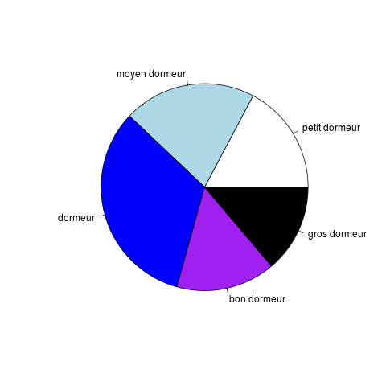

Graphiques en R
L'objectif de ce TP est d'apprendre à faire quelques graphiques en R. Les capacités graphiques de R sont extrêmement étendues. Nous ne présentons ici que les plus simples.
Vous indiquerez vos réponses dans ce formulaire. Ce n'est pas un contrôle noté.
Table des matières :
- Afficher un attribut
- Graphe d'un atrribut en fonction d'un autre
- Droite de régression
- Plusieurs relations sur un même graphique
- Histogrammes
- Camemberts
- Mettre un graphique dans un fichier
Afficher un attribut
On veut réaliser le graphique suivant de l'attribut Sleep. Cela est réalisé avec la fonction plot().

- Faites-le.
- Ajoutez-y couleur et légendes.

Un attribut par rapport à un autre
- Faites le graphique suivant de l'attribut Dreaming en fonction de Sleep.

Mettez les points en vert et les légendes. - Faites la même chose en indiquant les noms des espèces à la place des cercles. Pour cela, on précède comme suit :
- on fait le même plot que précédemment sans afficher les points (indiquez pch = ' ' dans le
plot()). Ça semble bizarre, mais grace à cela, R affiche les axes de coordonnées, ... - on affiche les noms avec la fonction text()

- on fait le même plot que précédemment sans afficher les points (indiquez pch = ' ' dans le
Droite de régression
Sur la graphique précédent, on peut ajouter la droite de régression avec la fonciton abline(). On va obtenir cela :

abline() ajoute une droite à un graphique étant donnée son équation. L'équation de la droite de régression est calculée par la fonction lm().
Supposons que l'on a deux vecteurs v et w de même longueur et que l'on veut calculer la relation linéaire exprimant w
- prenons un vecteur v <- c (3, -5, 2, 7, 0)
- prenons un second vecteur w <- 2.5 * v + .25
- calculons la droite de régression lm (w ~ v). Le résultat obtenu est conforme à ce que l'on attend, n'est-ce-pas ?
- prenons un troisième vecteur w2 <- 2.5 * v + .25 + rnorm (5, sd = .5)
- calculons la droite de régression lm (w2 ~ v). Le résultat obtenu est conforme à ce que l'on attend, n'est-ce-pas ?
- Refaites le graphique précédent de l'attribut Dreaming en fonction de Sleep. (C'est juste par souci de lisibilité du graphique : on peut ajouter la droite de régression au grahique avec le nom des espèces.)
- Y ajouter la droite de régression en pointillés de couleur rouge. Aide : utilisez le paramètre lty de la fonction plot() pour obtenir des pointillés.
Deux relations sur un même graphique
On veut afficher deux relations dans un même graphique : Dreaming en fonction de Sleep et Non.Dreaming en fonction de Sleep.
Pour cela, on affiche une première relation, par exemple celle que l'on a affiché précédemment Dreaming en fonction de Sleep.
Puis on ajoute l'autre relation avec la fonction points qui s'utilise exactement comme plot() sauf que points() ajoute des points à un graphique au lieu d'en commencer un nouveau.
Ajoutez ces points en bleu, en spécifiant pch = 19 dans la fonction points().
Vous ne le remarquez peut-être pas, mais il manque des points pour les gros dormuers : l'axe des ordonnées a été créé avec l'attribut Dreaming. Hors la durée de sommeil sans rêve est beaucoup plus longue que la durée de sommeil avec rêves. Pour que l'axe soit créé avec un intervalle correct, il faut l'indiquer lors du plot avec l'argument ylim qui indique les valeurs d'ordonnées minimale et maximale (il existe aussi xlim pour les abscisses). Pour connaître les valeurs extrêmes d'ordonnées, il suffit de faire :
> range (c (sommeil$Dreaming, sommeil$Non.Dreaming), na.rm = T)
et utilisez les valeurs dans le plot :
> plot (sommeil$Sleep, sommeil$Dreaming, ylim = c (0, 20))
Ce graphique manque encore d'une légende pour expliquer le sens des deux types de points. On l'ajoute à l'aide la fonction legend() comme suit :
> legend (3, 20, # position du coin supérieur gauche de la légende
c ("Dreaming sleep","Non dreaming sleep"), # les étiquettes associées
pch = c (1, 19), # les points : cercle (1) et disque (19)
col = c ("green", "blue")) # leurs couleurs respectives
Faites ce graphique (avec les couleurs, les deux droites de régression, la légende).
Histogramme
Pour réaliser un histogramme, on utilise la fonction hist().
- Faites l'histogramme de l'attribut Sleep pour visualiser la répartition de ses valeurs dans le jeu de données.

Utilisez le paramètre breaks = ... où vous remplacez ... par la valeur qu'il faut pour reproduire l'histogramme ci-dessus. - Au lieu des effectifs,on peut afficher des proportions en indiquant l'optin freq = F.

- À cet histogramme, on peut ajouter une estimation de la densité de la distribution de cet attribut :

Camembert
Le camembert, quoique populaire, est une mauvaise manière de représenter des proportions. Néanmoins, on va voir comment en obtenir. On utilise la fonction pie ().
pie () a besoin de connaître les différentes tranches du camembert. Pour cela, on construit une table de contignence de l'attribut que l'on veut représenter et on passe cette table de contingence à pie(). La table de contingence s'obtient par table(). table() compte simplement le nombre d'occurences de chaque valeur. Par exemple, vous pouvez essayer :
> table (c (4, 2, 4, 3, 2, 1, 4, 2, 2, 0, 1, 5)
et vous obtenez le nombre d'occurances de chaque valeur dans le vecteur. Le camembert est alors dessiné par pie() :
> pie (table (c (4, 2, 4, 3, 2, 1, 4, 2, 2, 0, 1, 5))
Pour un attribut qui prend beaucoup de valeurs (typiquement un attribut continu comme Sleep ou Body.Weight, chaque valeur n'ait généralement présente qu'une seule fois. Dans ce cas, il faut regrouper les valeurs par paquets. La fonction cut () fait cela.
- Générez le camembert suivant pour l'attribut Sleep.exposure.

- Même chose pour Sleep.

Mettre un graphique dans un fichier
On peut facilement stocker un graphique dans un fichier, au format pdf, png, jpeg, ...
Pour cela, si on peut le mettre dans un fichier pdf, il suffit avant de taper les commandes qui font le graphique, de taper la commande :
> pdf ("nom-du-fichier.pdf")
vous tapez ensuite toutes les commandes pour créer le graphique (rien ne s'affiche à l'écran). Et pour finir, vous tapez la commande :
> dev.off ()
Cette commande écrit le graphique dans le fichier et termine le graphique. Ensuite, les commandes graphiques sont réalisées à l'écran et non plus dans le fichier.
Si vous voulez obenir le graphique dans un fichier png, vous tapez la commande kpng ("nom-du-fichier.pdf") au lieu de pdf ("nom-du-fichier.pdf"), et même chose pour un fichier jpeg, vous tapez jpeg ("nom-du-fichier.pdf") au lieu de pdf ("nom-du-fichier.pdf").